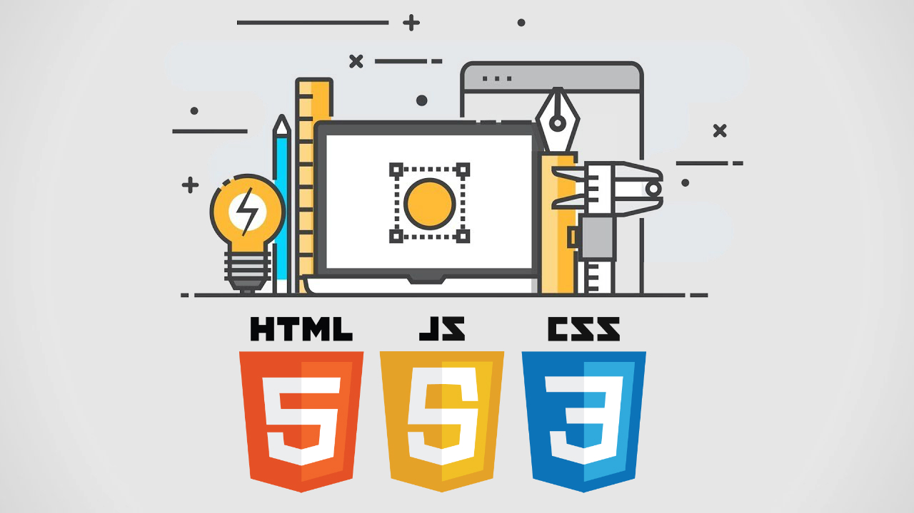

Front-end - интерфейс взаимодействия между пользователем и основной программно-аппаратной частью (back-end).
Как стать Фронтенд разработчиком?
Послушать наш доклад
Завести твиттер
Купить macbook

HTML
HTML (от англ. HyperText Markup Language — «язык гипертекстовой разметки») — HTML (или XHTML). Язык HTML интерпретируется браузерами; полученный в результате интерпретации форматированный текст отображается на экране монитора компьютера или мобильного устройства.
История
HTML - приблизительно в 1986—1991 годах
HTML 2,3 — 1995 год
HTML 4 — 1997 год
HTML 5 — 28 октября 2014 года
HTML 5.2 был представлен 14 декабря 2017 года
CSS
CSS (/siːɛsɛs/ англ. Cascading Style Sheets — каскадные таблицы стилей) — формальный язык описания внешнего вида документа, написанного с использованием языка разметки.
Спецификации CSS
CSS1
CSS2
CSS3
CSS4
Спецификации CSS
CSS1
CSS2
CSS3
CSS4
JavaScript
JavaScript (/ˈdʒɑːvɑːˌskrɪpt/; аббр. JS /ˈdʒeɪ.ɛs./) — мультипарадигменный язык программирования. Поддерживает объектно-ориентированный, императивный и функциональный стили. Является реализацией языка ECMAScript (стандарт ECMA-262).
JavaScript обычно используется как встраиваемый язык для программного доступа к объектам приложений. Наиболее широкое применение находит в браузерах как язык сценариев для придания интерактивности веб-страницам
Версии ECMAScript
ES5
аксессоры getters и setters
поддержку JSON
множество новых функций
ES6/ES2015
стрелочные функции
создание шаблонных строк с помощью ``(обратных кавычек)
Методология БЭМ создана в Яндексе для разработки сайтов, которые надо делать быстро, а поддерживать долгие годы.
Она позволяет создавать расширяемые и повторно используемые компоненты интерфейса.